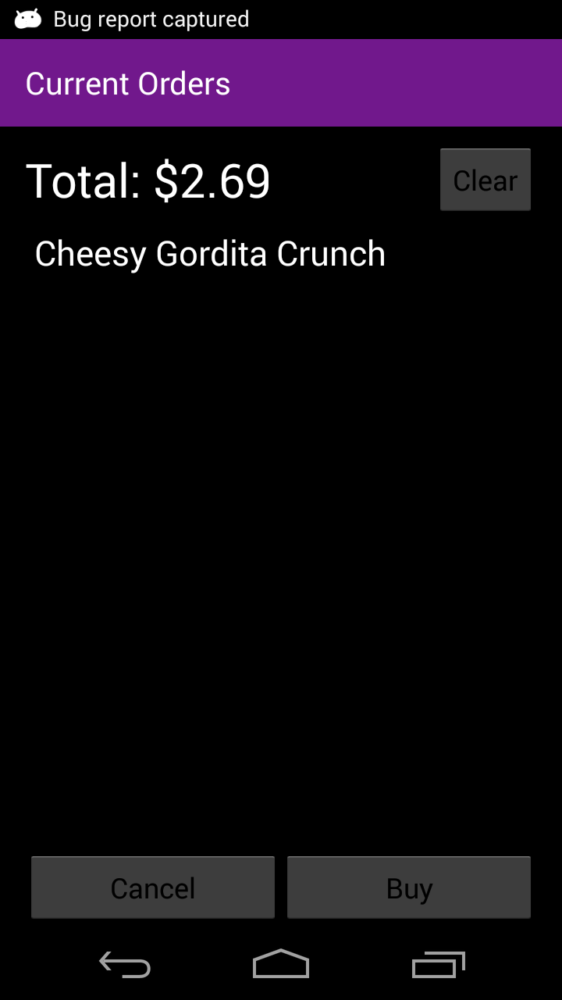

Android Application
The main menu of the application presents a Menu button, Orders button, Status button, and About button.
The Menu button brings the user to a page containing categories of foods. The Orders button brings the user to a page containing their current
order. The Status page brings the user to the Google Map and shows them the drone location on the path from Taco Bell to their location. The
About button brings the user to a small description of the application and who worked on the project.
The About page lists who worked on the drone project and what the application's function is and what it was made for.
The Food Menu shows image buttons that can be clicked on to bring up a list of items in that category. The categories are Combos, Tacos,
Burritos, Specialties, and Drinks.
As stated above, clicking on a category brings up a list of food. Swiping to the right will also bring up a list of every item to choose from.
Clicking on a food or beverage item brings the user to the item page, showing an image of the item, price, and possibly later, a description.
The user may also input a number from 1 to 50 for quantity of the item, click the Add to Order button, then will be brought to the Order page.
The Order page displays the current total and list of the items and quantities requested. The user may click cancel to go back to the Main
Menu or click Buy to go to the Payment page. Clear may be clicked to remove all items from the order.

The Payment page allows the user to specify where they live, their name, contact information, and payment information. The user is only
required to input their name, either phone number or e-mail, and payment information.
This is where screenshots of the maps usage go. and descriptions of the necessary steps taken.